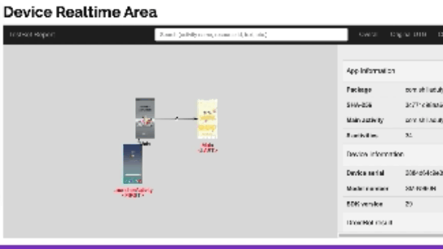
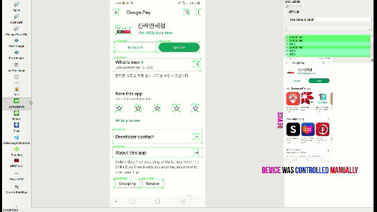
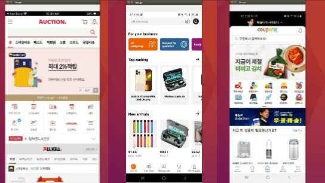
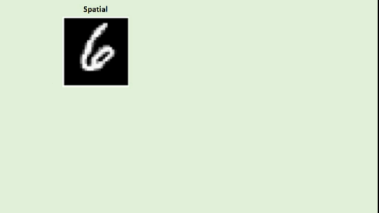
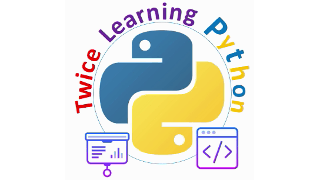

최근 프로젝트들
여기서 여러 프로젝트를 볼 수 있습니다.

스마트 팩토리 솔루션
자동 라벨 프린터, 데이터 수집기, 하드웨어 및 데이터베이스 연결

AI를 이용한 모션 캡처
포즈 추정 모델을 이용한 애니메이션이나 영화 제작

자동화 및 규칙 기반 테스팅
안드로이드 및 IOS 애플리케이션 테스팅

새로운 LabelImg 툴
자동 라벨링, 증강, 학습을 위한 새로운 LabelImg 툴

Object Detection Models & APIs
Detect objects on mobile applications

Multi-Scale Template Matching
동시에 여러 장치를 제어하기

CSONG
Control Suite with Open-World Novelty Generator

자가 주문 애플리케이션
제품을 스스로 주문한다

Café Cleanlines
카페 테이블의 현재 상태 확인하기

FFT를 사용한 분류 개선
Extending Input Channel Using Global Feature Image for Convolutional Neural Networks

Image Enhancement
이미지의 소음과 안개를 제거하여 품질을 향상하기

Python for Beginners. Learn Twice
프레젠테이션과 코딩을 통해 파이썬 프로그래밍을 깊이 있고 상세하게 배운다.